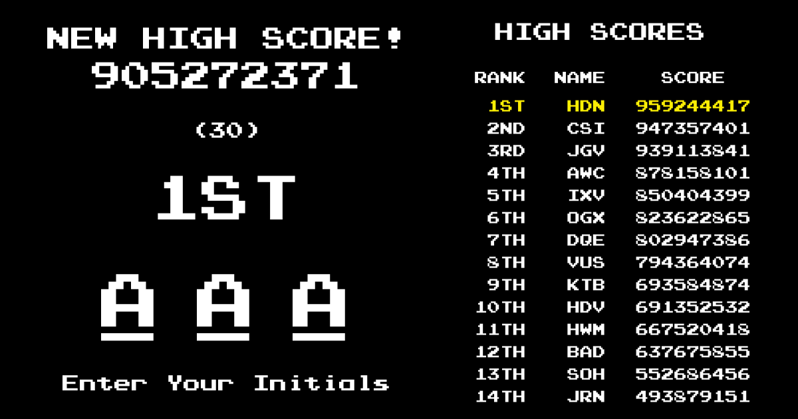
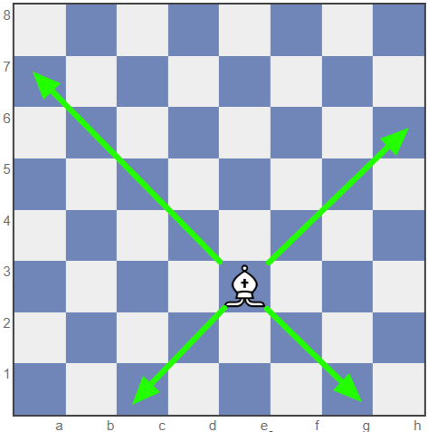
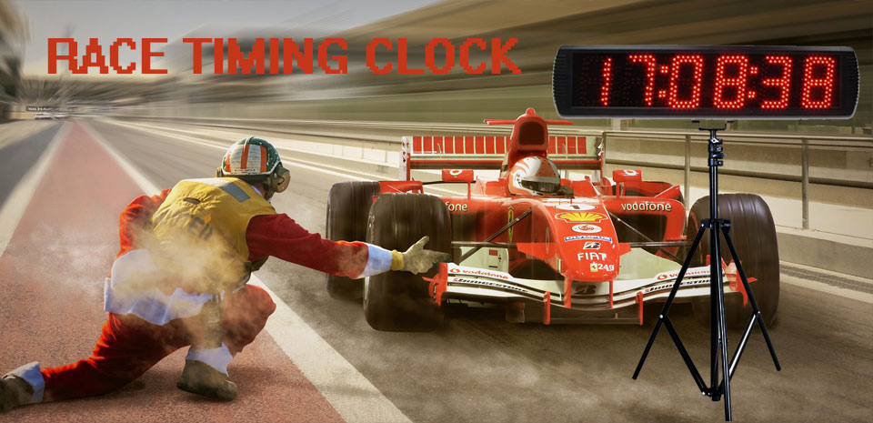
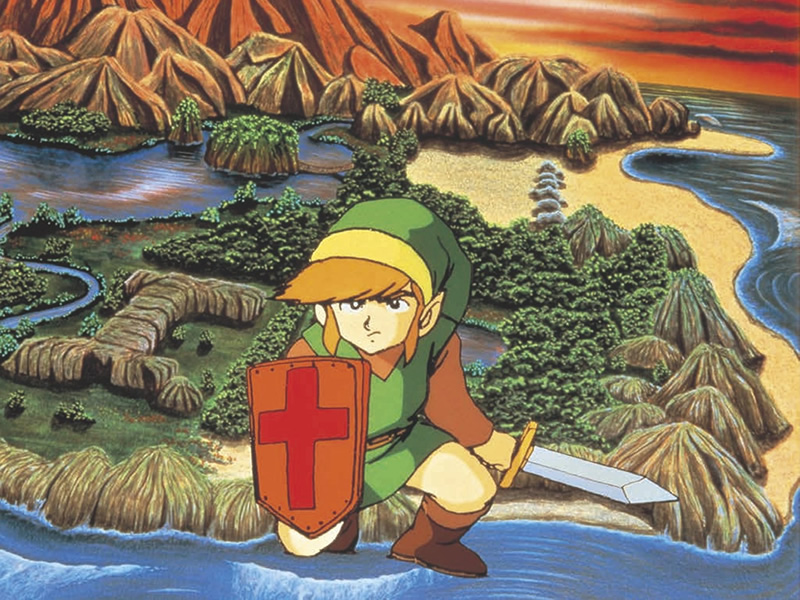
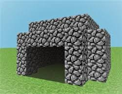

Game Design & Development · Lesson 1
What Makes a Game?
Before you write a single line of code, great games start with a clear design. Learn the four ingredients every game needs, the MDA framework designers use to think about play, and build your own game concept — no code required.
The 4 Ingredients of Every Game
Every real game has four essential things. Game designer Bernard Suits called it "the voluntary attempt to overcome unnecessary obstacles."
Goals
A clear win or objective. Reach the flag, score 10 points, survive the longest.

Rules
Constraints that limit what you can do. Rules create the challenge.

Feedback
Information showing progress. Score, health bar, sound effects, screen shake.

Voluntary Play
Players choose to play. A fun game makes you want to keep playing.
The MDA Framework
Game researchers Robin Hunicke, Marc LeBlanc, and Robert Zubek created MDA in 2004 — the most widely used framework for understanding and designing games. It says every game can be analyzed at three levels:
Designers work top-down (decide the feeling first, design mechanics to produce it). Players experience games bottom-up (feel the mechanics, experience the dynamics, have the emotional response).
The History of Video Games — Tech vs. Complexity
Here's a pattern worth noticing: the earliest video games needed some of the most advanced, expensive technology on the planet — yet the games themselves were almost absurdly simple. Today, the technology to make a game fits in a browser tab — and it can build something wildly complex. Scroll through six decades and watch the two bars flip.
The Lab Era
Room-sized computers built from thousands of vacuum tubes, costing more than a house — owned only by university physics labs and the military.
Tennis for Two (a glowing dot bouncing over a line on an oscilloscope) and Spacewar! (two ships orbiting a star on MIT's $120,000 PDP-1).
The Home TV Game
Engineer Ralph Baer, working at Sanders Associates, believed the television already sitting in every living room could do more than show broadcasts. His team built a series of prototypes — nicknamed the "Brown Box" — that turned an ordinary TV into a game screen using nothing but transistor logic, no computer required.
Sanders licensed the Brown Box to Magnavox, which released it in 1972 as the Magnavox Odyssey — the first video game console ever sold for the home.
Coin-Op & Custom Circuits
Arcade cabinets ran on hard-wired logic — the original Pong had no CPU or software at all, just custom circuitry built for that one game.
Pong, Breakout, Space Invaders — one screen, one mechanic, rules you could learn in five seconds.
8-bit Cartridges
Home consoles ran on 8-bit CPUs with kilobytes of memory — the entire original Super Mario Bros. fits in about 40 kilobytes total.
Super Mario Bros., Tetris, The Legend of Zelda — bigger worlds built from small, repeating rule sets.
The Jump to 3D
Dedicated 3D graphics chips and CD-ROMs arrive, letting entire rendered worlds fit on a single disc — a huge leap past cartridge memory limits.
Myst, Super Mario 64, Final Fantasy VII — real 3D space, still hand-built scene by scene.
Studios & Engines
Licensed engines and broadband internet save teams from building tools from scratch — but a top-tier game now needs 50–500 people and years of budget.
World of Warcraft, Halo, Grand Theft Auto — massive and persistent, reachable only with serious money and staff.
The Solo-Dev Breakthrough
Free engines like Unity and GameMaker put professional-grade tools on a single laptop.
Minecraft — coded almost entirely solo by Markus Persson — became one of the best-selling games ever made.
No-Code & Block Coding
Scratch, MakeCode, and Roblox Studio bring drag-and-drop game logic to classrooms and bedrooms — no syntax required.
Millions of student- and hobbyist-made games, some played by more people than big-budget releases.
Describe It, Build It
An AI assistant can write working game code, generate art and music, and debug your logic from a plain-English sentence in a browser tab.
One student can prototype a physics-based, multi-level, scoring game in an afternoon — something that once needed a whole studio.
Real Artifacts: The Ralph Baer Prototypes
These are the actual objects behind the "1966–1972" era above, photographed and preserved by the Smithsonian's National Museum of American History.
Baer's very first test unit — shown with the alignment generator he used to put a controllable dot on a television screen for the first time in history.
The finished prototype Sanders licensed to Magnavox — the first system ever built to play multiple different games on an ordinary television.
Fewer than 200,000 units sold — weak marketing left many shoppers thinking it only worked on Magnavox TVs — but it proved a home console could exist.
An add-on peripheral Baer's team built for the Brown Box — evidence they were already designing a game library, not just one game, around a single machine.
Video game history text and object photographs (this section): National Museum of American History, Smithsonian Institution — "The Father of the Video Game: The Ralph Baer Prototypes and Electronic Games." Images used under the Smithsonian's Open Access (CC0) initiative.
Before the Code: Real Games at the Drawing Board
Every game on the timeline above — no matter how technically advanced — started the same way: a sketch, a typed page, a hand-drawn map. None of these teams opened a code editor first. They organized a rough idea into architecture — a concept, a list of systems, and a structure connecting them — and only then started building. Here are four real, documented examples you can go verify yourself.

Shigeru Miyamoto didn't start Zelda with a plot — he started with a childhood memory of getting brave enough to explore a real cave near Kyoto. That single feeling became the design goal for the entire game: make the player feel that same nervous curiosity.
"When I was a child, I went hiking and found a lake." — Shigeru Miyamoto
Read the full story →LucasArts' design team mapped every puzzle in Grim Fandango on hand-illustrated, sketch-covered pages, working out how each clue connected to the next before any of it was programmed. The Video Game History Foundation has preserved and published the actual document online.
See the real design document →
Minecraft began as a one-week experiment Notch called "Cave Game," inspired by Infiniminer and Dwarf Fortress. The very first public test video didn't even let you place a block yet — it was just a cave you could walk through. Everything else was added on top of that tiny first architecture.
See the earliest prototype history →Portal didn't start at Valve at all — it began as Narbacular Drop, a student senior project built by a small team at DigiPen. Valve saw it at a student showcase and hired the entire team on the spot to rebuild the idea. Your class project could be someone's Portal.
See the original student project →From concept to architecture: every one of these documents did the same four things, just in different formats.
Game Genres & Core Mechanics
Genres cluster games by their dominant mechanic. Click any genre to see its defining mechanic.
Tiny-Loop Games — Design Fast, Finish Strong
For a single-day build (a camp, a class period, a jam), the games that actually get finished are tiny-loop games: one mechanic, one win/lose condition, and one variable a student can customize. Big "adventure game" ideas explode in scope fast — a maze with an inventory and a boss fight is three unfinished projects wearing a trenchcoat. Start from one of the ten archetypes below instead of inventing a new genre from scratch.
Kids understand it instantly — the safest pick for a one-day camp.
- Move player left/right
- Spawn falling objects
- Good item touched → +1 score
- Bad item touched → −1 life
Teaches collision, timing, and tension as difficulty ramps up.
- Player movement
- Enemy movement (chase, fall, or fly)
- Collision = lose a life
- Score/timer climbs while surviving
Extremely easy to build — add an upgrade to make it feel like a real game.
- Click/tap the sprite
- Score increases
- Upgrade makes score increase faster
Great logic lesson — but hand out a maze template so drawing walls doesn't eat the whole day.
- Arrow-key movement
- Walls block or reset the player
- Touch the goal tile to win
- Optional: key/door mechanic
Very satisfying, but scrolling obstacles trip up true beginners — best once students know the basics.
- Gravity pulls down
- Key press = jump/flap impulse
- Scrolling obstacles
- Collision = game over
Teaches angles, velocity, and reflection — simplify the bounce math for younger kids.
- Ball moves every frame
- Bounces off walls and paddle
- Score when the ball passes a side
Keep it nonviolent — pop balloons, clean trash, zap viruses, spray out fires.
- Player movement
- Projectile spawns and travels
- Target disappears when hit
- Score +1 per hit
The coolest fit for a music/STEAM camp — but bring a starter engine so it finishes in a day.
- Notes fall toward a target line
- Press the matching key at the right time
- Score is based on timing accuracy
Very easy and classroom-friendly — more design and writing than coding.
- Question appears
- Correct answer advances
- Wrong answer gives a hint or a retry
Best for mixed-ability teams — writers, artists, and coders can all contribute a piece.
- Scene is presented
- Player picks choice A or B
- Each choice leads to a different outcome
Quick picks by grade band:
Design Workshop — Build Your Own Game Concept
Fill in the fields below to generate a game design pitch. You don't need to know how to code yet — just think like a designer. Click "Use as Starting Point" on any tiny-loop archetype above to load a template here, then customize it.
Game Design Document (Mini)
Identify the Elements
For each scenario, identify what game design element is being described.
1. In a racing game, a sound effect plays and the screen flashes green whenever you pass a checkpoint.
2. In chess, you cannot move your king onto a square that is under attack.
3. The objective of Pac-Man is to eat all the dots on the screen without being caught by a ghost.
4. A player quits a mobile game because it started feeling like homework — just chores to collect daily rewards.